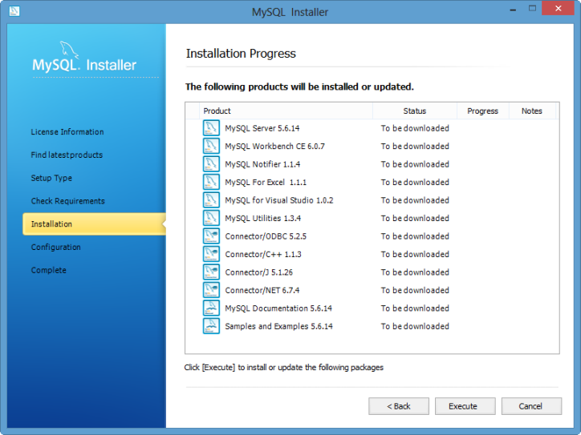

Apache2.2, PHP5.4 & MySQL5.6
- Installation 2015
Installing AMP (Apache/MySQL/PHP) on Windows is not a difficult task, however, it is not that straight forward, either.
In my tutorial, I tried two different installations depending on the versions to install:
- Apache 2.2, PHP 5.4 - this chapter
- Apache 2.4, PHP 5.5 - next chapter
After all the steps of this tutorial, we'll be able to host our web site on our PC running Windows. We can display our php page by typing URL like http://www.mycompany.com/index.php into the browser. We are hosting our web site! We also will have access to MySQL database.
- Go to Apache Http Server 2.2.25
Click Binary.
Then, download -(MSI Installer): httpd-2.2.25-win32-x86-openssl-0.9.8y.msi - PHP 5.4.27
VC9 x86 Thread Safe (2014-Apr-03 06:32:22): php-5.4.27-Win32-VC9-x86.zip
We may also need Microsoft Visual C++ 2008 SP1 Redistributable Package (x86) for this PHP and Apache combination. -
MySQL 5.1.50
mysql-installer-web-community-5.6.14.0.msi
- Run the Apache installer package, "httpd-2.2.25-win32-x86-no_ssl.msi"
- Click "Next".
- In the "Server Information" dialog box, enter localhost (without the quotes) for the Network Domain as well as for the Server Name and whatever email address we wish for the "Administrator's Email Address" field.
The installer uses the information we enter to create a default Apache configuration file for us. We can always go back and manually change these values in our configuration file if we change our mind later.
Leave the default setting of for All Users, on Port 80, as a Service as it is. Click "Next" when we're done.
- When asked about the Setup Type, select "Typical" and click "Next".
- In the Destination Folder dialog, allow the installer to install to the default folder. So, just click "Next"
- Finally click the "Install" button to allow the installer to set up Apache.
When it is done, click the "Finish" button. - Once Installation is complete, verify the installation by clicking on the Apache Icon in the taskbar (far left), as shown below.
(note) There may be a problem related to port:80, then we may want to restart our machine. - Congratulations for a successful installation of Apache. We still have to configure Apache, but we will do it in the later steps.
We can also verify our installation of Apache by opening http://localhost/ in our browser. Or we can just type in "localhost" for the URL.
- Extract PHP package
Now it's time to install PHP5. Open the zip file & extract all our files to C:\php. Navigate to C:\php - Make php.ini file
Rename php.ini-development to php.ini - Edit the php.ini file
- Edit 1
Find extension_dir = "./" and replace it withextension_dir = "C:/php/ext"
- Edit 2
We're going to uncomment by removing the ";" from the extension to activate it.
Here are the extensions to be uncommented.
Search for each one them and remove the semicolon ";";extension=php_gd2.dll ;extension=php_mbstring.dll ;extension=php_mysql.dll ;extension=php_mysqli.dll
The First extension enables the Image GD library of PHP.
The Second enables mbstring.
The Third and forth enables us to use MySQL database.
Save the php.ini file.
- Edit 1
- Setup PHP Environment
Let's setup the PATH environment variable.
Start->Control Panel->System->Advanced System Settings
then go to the Advanced tab, click on the Environmental Variables button,
then scroll down in system variables to find PATH,
Edit it Add C:\php; - Restart the System
We must reboot a windows system after setting the Path variable.
If we move on past that point without rebooting apache may have trouble finding our MySQL extensions.
Now we have PHP configured.
- Let's move on to configuring Apache.
Go to
C:\Program Files (x86)\Apache Software Foundation\Apache2.2\conf\
We may need to turn off UAC for editing.
- httpd.conf Editing
- Edit 1
Uncomment:
#LoadModule rewrite_module modules/mod_rewrite.so => LoadModule rewrite_module modules/mod_rewrite.so
- Edit 2
Add the following below the previous edit#PHP5 LoadModule php5_module "C:/php/php5apache2_2.dll" PHPIniDir "C:/php"
Note: We may get "Apache :: The Requested Operation has Failed" when we try to restart Apache, one of the reason may be a mismatch between php and Apache. While I am writing this, php 5.5.5 is available, and it has php5apache2_4.dll. So, I lowered the version 5.4.27, and then, everything seemed to be working fine. - Edit 3
Search forAddType application/x-gzip .gz .tgz
Add the following below the searched line. The lines define a MIME (Multipurpose Internet Mail Extensions) type for files ending with a file extension of .php and .phps so they will be processed by the PHP parser on request.AddType application/x-httpd-php .php AddType application/x-httpd-php-source .phps
- Edit 4
Search forDirectoryIndex index.html
Replace it withDirectoryIndex index.html index.php
- Edit 5
Uncomment:#Include conf/extra/httpd-vhosts.conf => Include conf/extra/httpd-vhosts.conf
- Edit 1
- Virtual Hosting Setup
Note: we can skip this step. But in that case, we may want to comment the line (we did uncomment in the previous section Edit5), otherwise we may have permission issues:
Include conf/extra/httpd-vhosts.conf ==> #Include conf/extra/httpd-vhosts.conf
We are about to make our server to host our domain for Apache Development project.
We can name our own but here I am going to use apacheserver.dev as a domain name.
So, after we finished this step, we'll be able to type in our URL on the web browser:
http://www.apacheserver.dev/,
then we get our home page from the http server installed on our machine.
But we need to setup the directory structure to realize the Virtual Hosting. - Directory Tree Setup
Make directory:C:/server/www/apacheserver.dev/public_html
- httpd-vhosts.conf
Editing
Open the file in:C:\Program Files (x86)\Apache Software Foundation\Apache2.2\conf\extra
Replace the contents with<virtualhost *:80> DocumentRoot "C:/server/www/apacheserver.dev/public_html" ServerName Apacheserver.dev ServerAlias www.apacheserver.dev <directory "C:/server/www/apacheserver.dev/public_html"> AllowOverride All Options Indexes FollowSymLinks Order allow,deny Allow from all </directory> </virtualhost>
- Apache Webserver Restart
Let's restart Apache server and check if it restarted successfully. .
In the previous step 3, we made directory structure,
C:\server\www\apacheserver.dev\public_html\.
This is where we will be putting all our html and script files and our webserver will use those files.
Let make a php file and name it index.php
and put it inside the C:\server\www\apacheserver.dev\public_html\ directory.
If you skipped the vhost setup, then the index.php should be place under C:\Program Files\Apache Software Foundation\Apache2.2\htdocs directory.
<?php phpinfo(); ?>
Then type localhost as URL for our browser. Then, we'll get the information about the PHP we've just installed.
This is a note for the case when php is not running. This sounds strange and it rarely happens, especially, when I reinstall apache. In this case, we may get a warning message something like this:
PHP Warning: PHP Startup: Unable to load dynamic library 'C:\\Program Files\\PHP\\ext\\php_openssl.dll' - The operating system cannot run %1.\r\n in Unknown on line 0 ...
The fix for this:
So I copied libeay32.dll to the Apache2.2/bin directory. Problem solved. No error messages and running phpinfo confirms that OpenSSL is present and enabled.
How does it fix the issue? I haven't look into it but it works.
This step is not necessary, but it's a nice feature to add.
To make Windows recognize our domain on Apache webserver,
we need to edit hosts file in C:\Windows\System32\drivers\etc directory.
Add the following two lines to the hosts file.
127.0.0.1 apacheserver.dev 127.0.0.1 www.apacheserver.dev
Then type in apacheserver.dev or www.apacheserver.dev as an URL,
then we'll get the same php information as when we type in localhost as an URL.

Then click the "Execute" button.
Configuration process is straight forward:

Type in localhost into the URL input box of our browser. Scroll down the page, and if we get the following information from phpinfo() output, MySQL is on our system.

We've got all three, Apache, PHP, and MySQL!
We know we successfully installed for our MySQL projects. As a final step, we want to check they are talking to each other. So, let's check our development environment is indeed successfully built. To do that, we're going to execute a PHP script which supposed to talk to MySQL server running on our system. The script file name is mysqlAvailability.php and we may want to put it into C:\Server\www\apacheserver.dev\public_html directory:
<html>
<head><title>MyQSL, talk to me.</title></head>
<body>
<h2>
<?php
$connection = mysql_connect("localhost", "root", "bogopass")
or die ("Sorry, MySQL is not talking to us");
echo ("Congratulations, MySQL started talking to us!");
?>
</h2>
</body>
</html>
Whe we put http://localhost/mysqlAvailability.php into a browser address field, the PHP parser executes the script code, and the following comes up if everything works.

Ph.D. / Golden Gate Ave, San Francisco / Seoul National Univ / Carnegie Mellon / UC Berkeley / DevOps / Deep Learning / Visualization